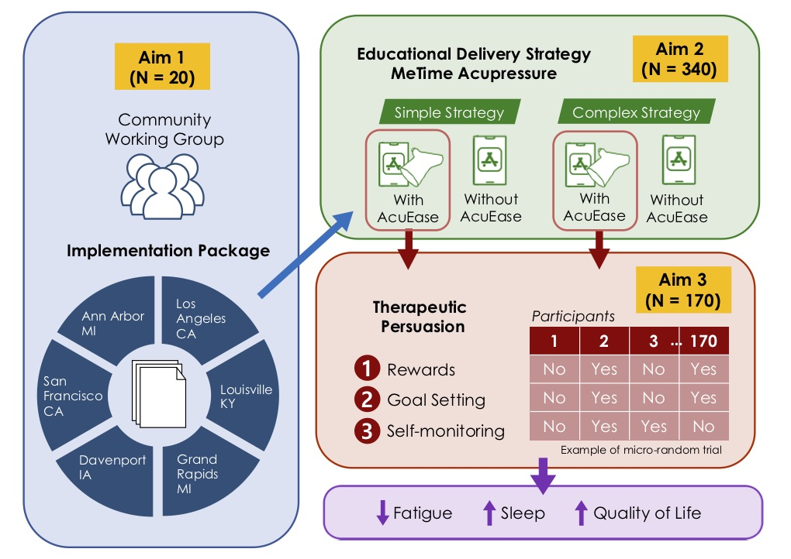
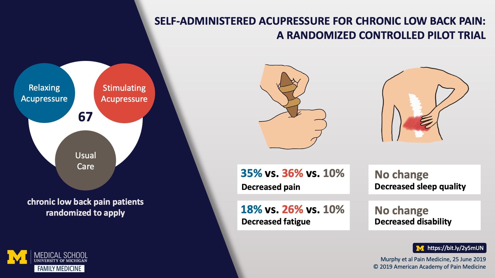
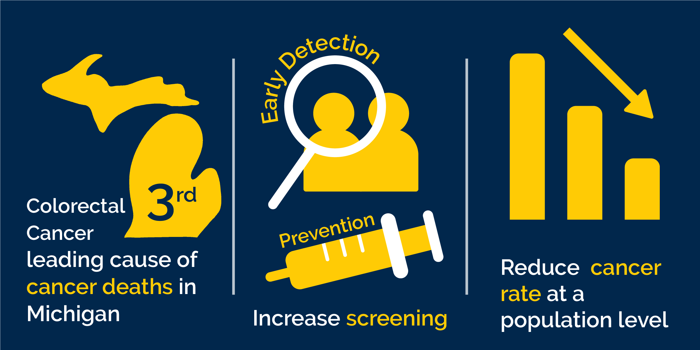
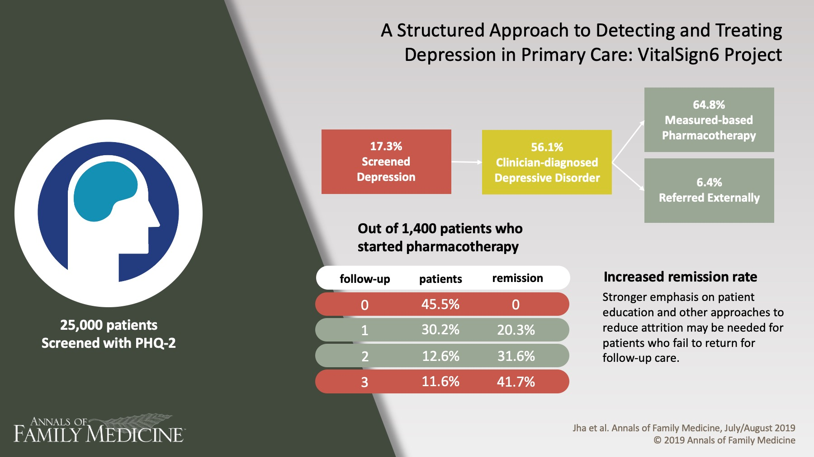

What is a visual abstract?
A Visual Abstract is a type of infographic that visually summarizes an article or a paper, in other words a visual format of the abstract. It convey the key concepts of the paper and easily translates to the users to understand the article at a glance rather than reading through the actual paper or the abstract but they usually don't contain all the details of an article. It is commonly used on social media such as Twitter to grab attention while users scroll through their feed.
These are some of the visual abstracts that I've worked on:

The Use of mHealth App and AcuEase

Self-Administered Acupressure for Chronic Low Back Pain: A Randomized Controlled Pilot Trial

Colorectal Cancer Prevention Infographic

A Structured Approach to Detecting and Treating Depression in Primary Care: VitalSign6 Project

Change in Prevalence of Disabilities and Accommodation Practices Among US Medical Schools, 2016 vs 2019
Maternity Care and Buprenorphine Prescribing in New Family Physicians